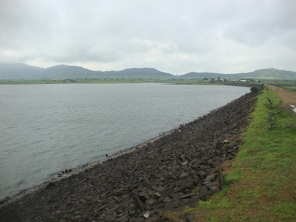
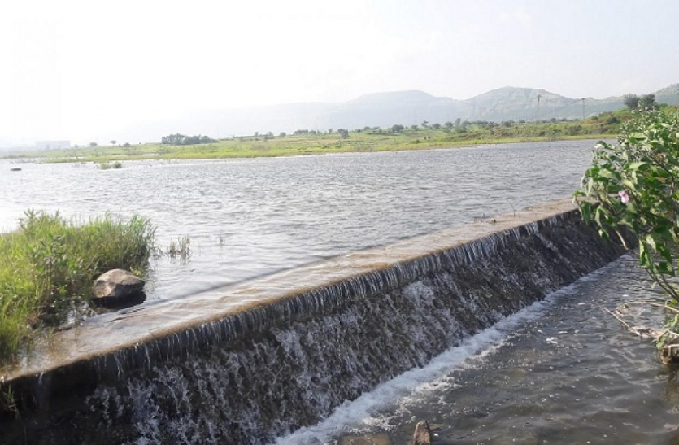
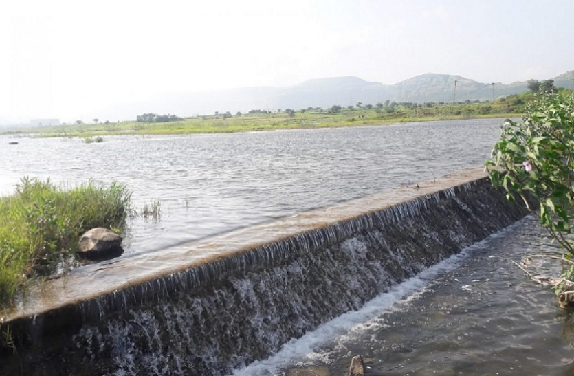
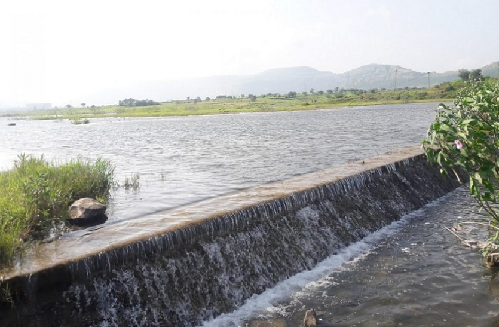

Jadhavwadi Dam



 


Category:Small Dam
About Place:
The road is amazing. It’s decorated with dark yellow flowers on both sides naturally. It makes you feel like it's Switzerland. Take your time to click pictures and proceed towards the dam. The road passes over the dam. You can drive a bike/car over it. But only one car can pass. Make your evening beautiful while enjoying the calm breeze coming over the waters. Sunset , Sunrise is also awesome here.

Season to visit: Any
Preferred time: Morning , Early evening
Type : Family, Friends
Author : Siddhant Sonawane